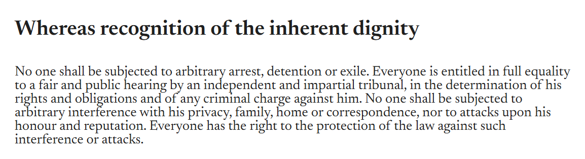
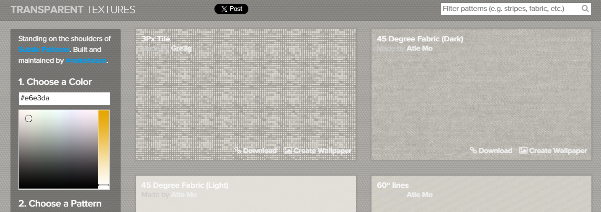
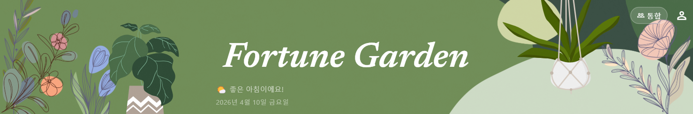
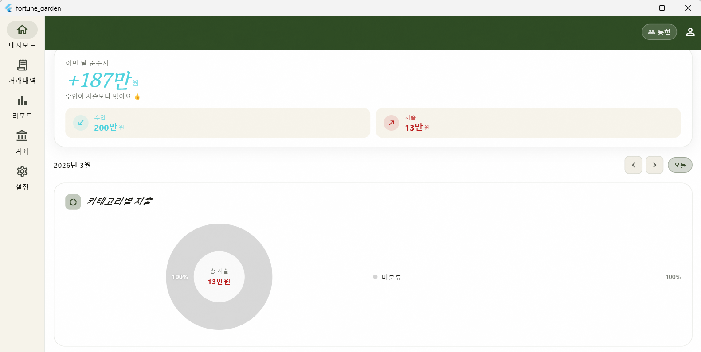
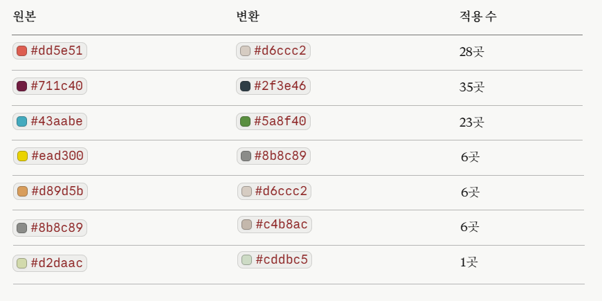

작업 개요
SCR-002 /dashboard (대시보드)
Tactile Archivist(라이트) + Verdant Atelier(다크) 혼합
히어로 헤더, 월 이동 기능, 개인 모드 프로필 표시, 디자인 전면 리뉴얼
header.png, Lottie Animations (Plant 시리즈)
Fortune Garden Hybrid 테마
A1. 컬러 토큰 및 타이포그래피

세리프 서체인 Newsreader를 포인트로 활용하여 클래식하고 정돈된 느낌을 부여했습니다.
| 모드 | 배경색 | Primary (올리브/민트) | 주요 서체 |
|---|---|---|---|
| Light | #FCF9F0 (아이보리) |
#384B2C |
Newsreader Italic (금액/헤더) System Sans-serif (본문) |
| Dark | #0D2A1D (딥 에메랄드) |
#4EDEA3 |
A2. 질감 효과 (GrainOverlay)

고급스러운 종이 질감을 위해 assets/images/grain.png를
반복 타일링하여 앱 전역에 오버레이했습니다.
// 4% 투명도의 그레인 질감 적용 Image.asset('grain.png', repeat: ImageRepeat.repeat, opacity: 0.04)
대시보드 주요 기능 구현

B1. _HeroHeader (SliverAppBar)
스크롤 시 올리브색 AppBar로 자연스럽게 접히는 인터랙티브 헤더를 구성했습니다.
-
배경: 1920×350 비율의
header1.svg를 하단 정렬 배치 - Lottie 연동: 흔들리는 식물 애니메이션을 Stack으로 배치하여 생동감 부여
- 인사말 로직: 현재 시각에 따라 '새벽', '아침', '오후', '저녁', '밤' 메시지 분기
-
오버랩 효과: 요약 카드를
-24px이동시켜 헤더와 본문 연결
B2. 월 이동(Navigator) 및 상태 관리

selectedMonthProvider를 통해 조회 기준 월을 관리하며,
미래 데이터 조회를 차단하는 로직을 포함했습니다.
SelectedMonthNotifier ├── prev() : 이전 달 이동 ├── next() : 다음 달 이동 (현재 달이면 동작 안함) └── reset() : 오늘 날짜로 복구
Lottie 에셋 색상 작업
C1. JSON 직접 수정을 통한 테마 최적화

런타임 성능 부하를 줄이기 위해 Lottie JSON 파일의
fl(fill) 및 st(stroke) 값을 직접 테마
컬러로 치환했습니다.
변경 파일 목록
| 파일 경로 | 유형 | 변경 내용 요약 |
|---|---|---|
lib/core/theme/app_theme.dart |
신규 | Hybrid 테마 정의 및 GrainOverlay 위젯 추가 |
lib/presentation/providers/app_providers.dart
|
수정 | selectedMonthProvider 추가 및 데이터 공급자 연동 |
lib/presentation/screens/dashboard/dashboard_screen.dart
|
수정 | HeroHeader 및 디자인 리뉴얼 전체 구현 |
lib/presentation/screens/dashboard/dashboard_charts.dart
|
수정 | 차트 내 테마 컬러 상수 적용 및 기타 항목 색상 조정 |
미완료 작업 (우선순위)
- 거래 내역/상세 디자인: SCR-003~005 화면에 신규 테마 및 카드 스타일 적용
- 리포트 고도화: SCR-006 화면의 통계 시각화 및 리뉴얼 스타일 통일